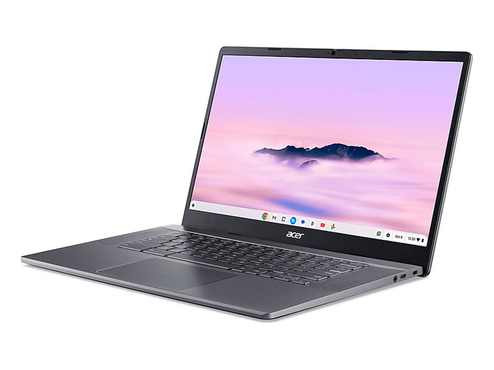

Ficha técnica
| Procesador | Intel Core i3-1215U |
|---|---|
| Gráficos | Intel UHD |
| Memoria | 8 GB LPDDR5 |
| Almacenamiento | 128 GB SSD |
| Pantalla | 15,6" IPS Full HD |
| Peso | 1,68 kg |
| Autonomía | 10 h según el fabricante |
| Sistema operativo | ChromeOS |
| Precio | 449 € orientativo |
Para quién es
Su mejor baza es el uso académico, con 82 de 100. Para jugar se queda en 20 de 100. Pesa 1,68 kg. Es el más barato del catálogo, con 449 €.
- Encaja si lo que más te importa es estudiar y tomar apuntes, y el presupuesto llega a 449 €.
- Busca otra opción si lo que prima es el gaming: aquí saca 20 de 100.
Notas por uso
Escala de 0 a 100. En el comparador se recalculan según el perfil que elijas. La nota global es 59 / 100, la media de los cuatro apartados.
Alternativas por precio
Los tres modelos del catálogo que más se acercan a su precio:
- Lenovo IdeaPad Slim 3 15+50 €
- Lenovo IdeaPad Slim 3 15IRH10+130 €
- Acer Aspire 5 15+200 €
Compáralo con otro modelo
Abre el comparador con este portátil ya cargado y enfréntalo a cualquiera de los 34.
Abrir el comparador